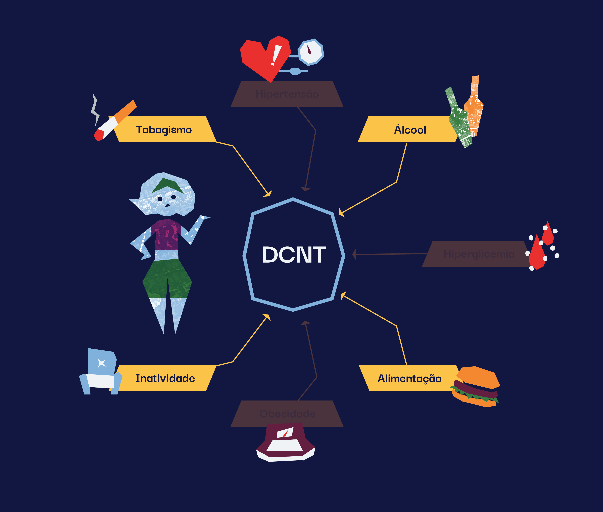
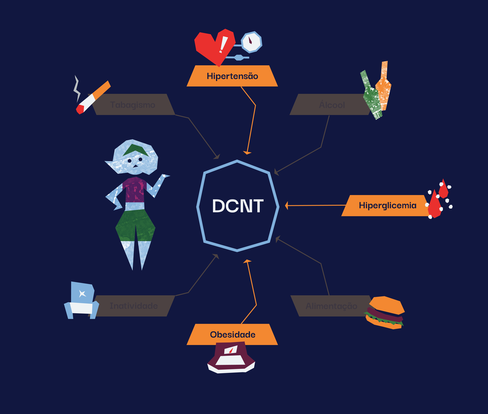
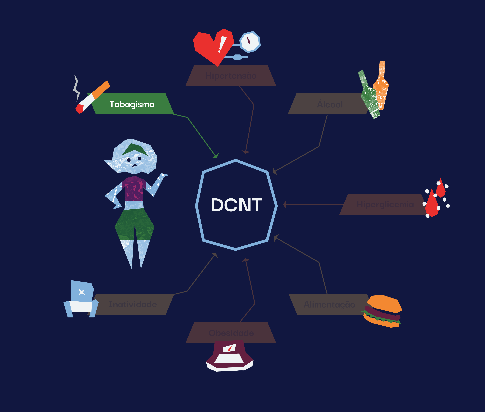
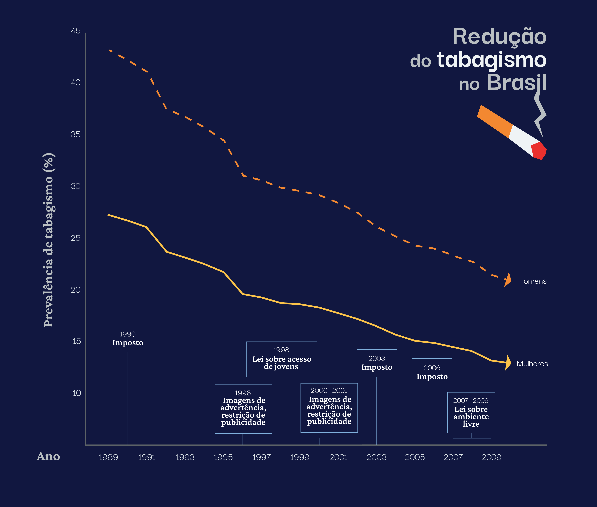
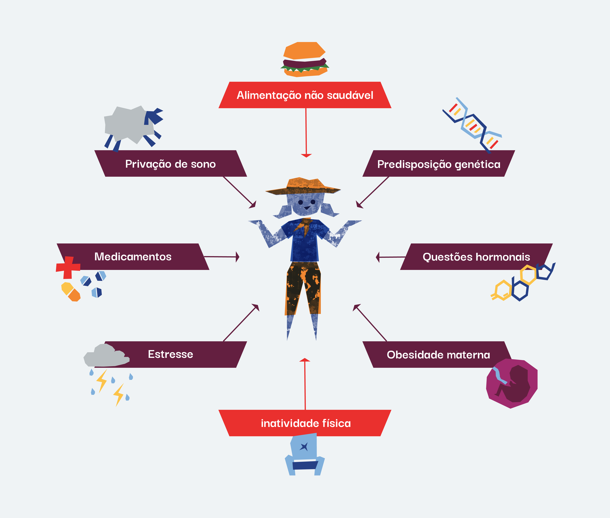
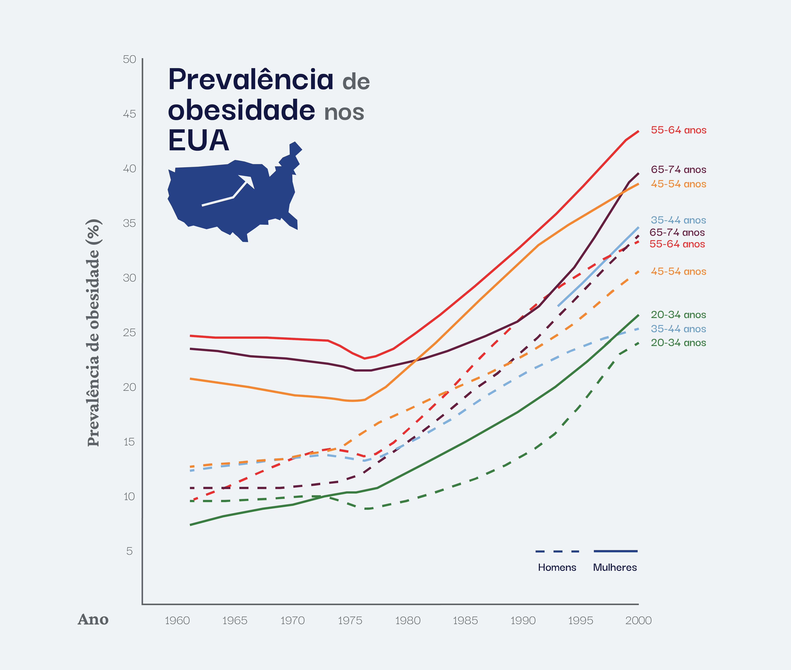
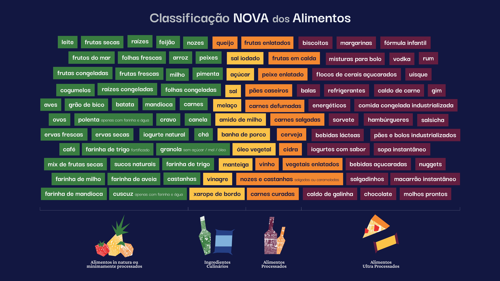
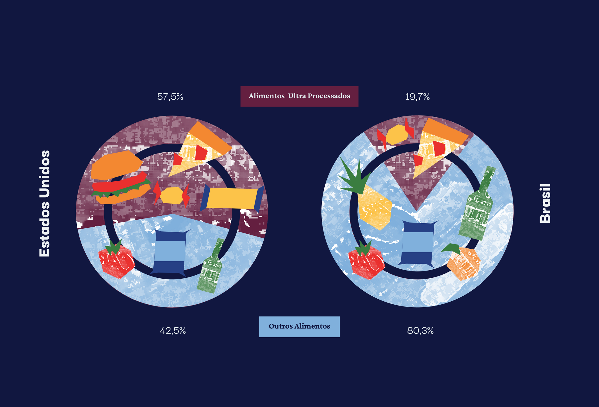
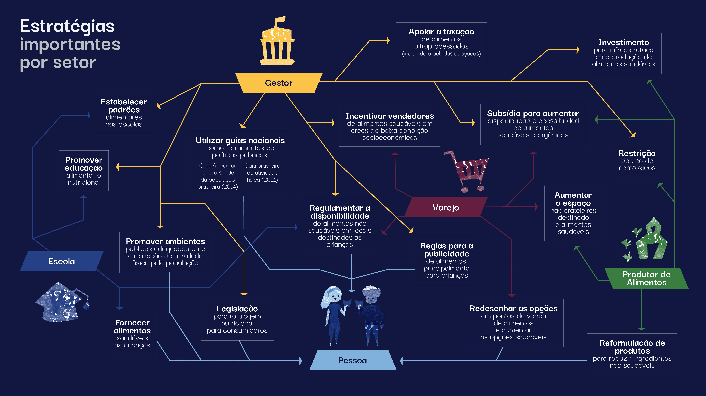

Por muito tempo, o foco no controle do sobrepeso e da obesidade
tem sido direcionado às escolhas individuais. Contudo, ao
entendermos o seu comportamento de epidemia, podemos ter ações
mais assertivas para cuidar da saúde da população. No Brasil, o
número de pessoas vivendo com sobrepeso ou obesidade tem
crescido de modo expressivo. Projeções para 2030 indicam que 68%
da população poderá estar com excesso de peso e 26% com
obesidade. Estimativas que preocupam ao considerarmos que o
excesso de peso e obesidade aumentam o risco de diversas Doenças
Crônicas não Transmissíveis (DCNT) e, consequentemente, têm
grandes impactos no Sistema Único de Saúde (SUS).
Epidemia de obesidade e as DCNT
Ao contrário de outros fatores de risco para o
desenvolvimento de doenças crônicas não transmissíveis
(DCNT), a porcentagem da população que apresenta excesso de
peso ou obesidade cresce de forma preocupante e epidêmica.
As DCNT são doenças multifatoriais, isto é, são causadas
por diversos fatores de risco, apresentam longos
períodos de latência e afetam pessoas por muitos anos,
até mesmo décadas, podendo resultar em incapacidades
funcionais. Exemplos de DCNT são as doenças
cardiovasculares, doenças respiratórias crônicas, as
neoplasias (cânceres) e a diabetes mellitus.
Em 2019 elas foram responsáveis por 55% das 738.371
mortes de adultos no Brasil. Dessas, 173.207 ou 56,1%,
ocorreram entre 30 e 69 anos de idade e, portanto, são
consideradas prematuras e evitáveis.
“Death in old age is inevitable, but death before
old age is not”(Richard Doll, 1994)
(“A morte em idade avançada é inevitável, mas a
morte prematura não o é”, em tradução livre)
Os principais fatores
de risco para DCNT são tabagismo,
consumo abusivo de álcool, alimentação não saudável e
inatividade física.
Além disso, há fatores de
risco metabólicos,
como hipertensão (pressão arterial elevada), hiperglicemia
(glicose elevada no sangue) e excesso de peso/obesidade.
Alguns fatores de risco para DCNT têm reduzido nos
últimos anos, como é o caso do
tabagismo.




Entre 1989 e 2019, uma série de políticas públicas
reduziu de 34,8% para 12,6% a porcentagem de fumantes no
Brasil.
Para saber mais sobre dados e números sobre prevalência
de tabagismo, clique
aqui.
Outros fatores de risco, no entanto, têm apresentado
tendência de aumento preocupante, como é o caso do
excesso de peso e da obesidade. O acúmulo excessivo de
gordura corporal está associado com o aumento no risco
de mais de 30 DCNT, em maior ou menor grau.
Entenda a porcentagem dessas 30 DCNT que são causadas
pelo excesso de peso e obesidade no gráfico ao lado.
A prevalência de obesidade (porcentagem de pessoas, em
um período e local, que apresentam esse quadro clínico)
No mundo
triplicou entre 1975 e 2016, chegando a 36% das pessoas
com excesso de peso e 13% com obesidade.
No Brasil
Entre 2006 e 2019, a prevalência de excesso de peso
aumentou de 42,6% para 55,4% da população. Para a
obesidade essa mudança foi de 11,8% para 20,3%.
Se nada for feito, projeções para 2030 indicam que esses
valores podem alcançar 68% para o excesso de peso e 26%
para a obesidade.
Mudanças efetivas nesse quadro só podem ser alcançadas com a
melhor compreensão e ação sobre as causas da obesidade.
É neste ponto que nossa perspectiva deve ser ampliada para
que possamos pensar em prevenção da obesidade na população.
As causas da obesidade em indivíduos e populações
Estratégias de prevenção da obesidade devem priorizar o
controle das causas da obesidade em populações, ou seja, as
causas que influenciam e explicam o aumento da prevalência
da obesidade, em detrimento das causas da obesidade em
indivíduos.

Por que uma pessoa desenvolve obesidade?
Diversos fatores têm sido descritos na literatura, como
a alimentação não saudável, inatividade física, privação
de sono, predisposição genética, o uso de medicamentos,
questões hormonais, estresse, obesidade materna, entre
outros.
Alguns desses fatores são individuais, enquanto que
outros são compartilhados por indivíduos de uma mesma
população.
É comum que estratégias de prevenção à obesidade tratem
comportamentos populacionais - alimentação e atividade
física, por exemplo - como escolhas individuais.
Essas abordagens, assim como as que focam apenas em
fatores relacionados às causas em indivíduos, são
inadequadas para explicar e prevenir a obesidade como
uma epidemia.
Por exemplo, fatores genéticos aumentam a predisposição
à obesidade em indivíduos, mas a genética não muda
drasticamente em poucos anos ou décadas e, portanto, não
poderia explicar o aumento na obesidade em populações ao
longo dos últimos anos.
Para identificar as causas da obesidade em populações,
ou seja, a influência dos fatores compartilhados pelos
indivíduos, precisamos olhar para a grande variabilidade
da prevalência de obesidade entre países, regiões e ao
longo do tempo.
Quando uma população que divide hábitos culturais entre
si tem uma prevalência de obesidade maior do que outra
população, com hábitos diferentes, temos um indício da
influência do comportamento coletivo sobre as pessoas.
Um bom exemplo, e para o qual há muitos dados, é o dos
Estados Unidos.

Mudanças no sistema alimentar dos Estados Unidos (EUA):
Diversos fatores têm sido descritos na literatura, como
a alimentação não saudável, inatividade física, privação
de sono, predisposição genética, o uso de medicamentos,
questões hormonais, estresse, obesidade materna, entre
outros.
Alguns desses fatores são individuais, enquanto que
outros são compartilhados por indivíduos de uma mesma
população.
É comum que estratégias de prevenção à obesidade tratem
comportamentos populacionais — alimentação e atividade
física, por exemplo — como escolhas individuais.
Causas individuais dificilmente teriam essa influência
na população em tão pouco tempo, seja por fatores
genéticos ou pela predisposição de cada pessoa a se
exercitar ou ter uma alimentação saudável.
Entretanto, alguns eventos da década de 70 afetaram a
dieta da população dos EUA de forma coletiva:
Mudanças nas leis agrícolas no país;
Marketing acelerado;
Disponibilidade e acesso a alimentos com alto teor
calórico; e
Introdução no sistema alimentar de adoçantes como
xarope de milho, com alto teor de frutose.
A maioria dos países têm passado por mudanças importantes no
sistema alimentar, com consequências na mudança no padrão da
dieta. E é dentro desse contexto de mudança que surge a
preocupação com os alimentos ultraprocessados.
O problema dos ultraprocessados
Estudos epidemiológicos têm mostrado uma associação entre
consumo de alimentos ultraprocessados e o aumento no risco
da obesidade e diversas DCNT.
Os ultraprocessados não são propriamente comida
de verdade. Esses produtos são formulações de origem e
uso industriais, obtidas por meio do fracionamento de
alimentos in natura (ou minimamente processados,
a exemplo do açúcar, óleos e gorduras), nas quais
utilizam-se corantes, aromatizantes, emulsificantes e
outros aditivos que os tornam hiper palatáveis. São
produtos com baixo custo de produção, prontos para
consumo e com alto tempo de prateleira, feitos para
potencializar o lucro.
A percepção de que os alimentos poderiam ser
classificados em relação ao nível, extensão e propósito
do processamento surgiu no Brasil no final dos anos
2000, na forma da classificação
NOVA. Antes, os alimentos eram classificados como fontes de
nutrientes específicos, independentemente do seu
processamento.
Segunda a NOVA, os alimentos podem ser classificados em 4
grandes grupos:


Nos EUA, onde a participação dos alimentos
ultraprocessados no total calórico é de 57,5%, a
prevalência de obesidade já chegou a 43%.
Nos EUA, onde a participação dos alimentos
ultraprocessados no total calórico é de 57,5%, a
prevalência de obesidade já chegou a 43%.
Mas nossos hábitos também estão mudando.
Caso o país siga a tendência mundial, o nosso arroz e feijão
rotineiros podem perder mais espaço para os produtos
ultraprocessados, com sérias implicações para a saúde de
nossa população e para o SUS.
Custos e Sobrecarga no SUS
A epidemia de obesidade indica que as escolhas individuais
têm pouca relevância enquanto permanecem limitadas em um
cenário de mudança do sistema alimentar.
Com a população exposta a cada vez mais alimentos
ultraprocessados, temos um cenário agravante de custos
atrelados ao cuidado e às perdas ocasionadas pelas DCNT.
Gastos hospitalares e ambulatoriais vem crescendo de
forma expressiva no Brasil nos últimos anos. No contexto
de recursos limitados e finitos disponíveis, é uma
necessidade premente o controle da epidemia de obesidade
no país, através do direcionamento de recursos para o
custeio de programas de promoção de saúde e controle das
doenças.
Em 2019, o gasto anual direto com doenças crônicas não
transmissíveis no Brasil foi de R$ 6,8 bilhões. Em sua
pesquisa, o grupo liderado pelo professor Leandro
Rezende, da Escola Paulista de Medicina da Universidade
Federal de São Paulo (EPM/UNIFESP), estimou que 22%
desse valor, R$ 1,5 bilhão, podem ser atribuíveis ao
excesso de peso e obesidade. Os custos atribuíveis foram
mais elevados nas mulheres (R$ 762 milhões) do que nos
homens (R$ 730 milhões).
O excesso de peso e obesidade expressos em números
em 2019.
Identificamos gasto anual direto de
R$ XX,X relacionados
às doenças crônicas não transmissíveis. Destes,
R$ XX,X (XX%) podem ser atribuídos ao excesso de peso e obesidade.
Além disso:
XXXXXX mortes,
XXXXXX
hospitalizações e
XXXXXX
procedimentos ambulatoriais realizados pelo SUS,
atribuíveis ao excesso de peso e obesidade.
ao excesso de peso e obesidade, em 2019, nos estados e
no Distrito Federal.
Políticas públicas para a saúde coletiva
Estratégias de identificação e controle das causas
populacionais que levam à obesidade devem ser prioridade da
ação dos gestores.
Se os fatores determinantes de aumento da prevalência da
obesidade são populacionais, a estratégia de prevenção
precisa ser social e coletiva, por meio de políticas
públicas eficazes.
Diante deste cenário pessimista e das implicações
que ele tem sobre o SUS, o Ministério da Saúde do
Brasil, em seu recém publicado “Plano de Ações
Estratégicas para enfrentamento das DCNT no Brasil
(2021-2030)” estipulou a meta de deter o crescimento
da obesidade em adultos no país até 2030.
Essa meta dificilmente será alcançada sem ações,
programas e políticas públicas voltadas às causas da
obesidade na população e do seu impacto na incidência de
DCNT. Se os fatores determinantes de aumento da
prevalência da obesidade são populacionais, a estratégia
precisa ser social e coletiva, por meio de Políticas
Públicas eficazes.
Existem diversas políticas públicas e leis que
necessitam ser implementadas, facilitando a escolha por
alimentos saudáveis na hora das compras e do consumo,
por exemplo:
Reforma tributária do sistema alimentar;
Tributação de alimentos ultraprocessados, como
bebidas açucaradas;
Informação nutricional mais clara e simples no
rótulo dos produtos;
Regras para a publicidade de alimentos,
principalmente para crianças;
Ampliação do acesso a alimentos orgânicos;
Restrição do uso de agrotóxicos.
Entenda algumas estratégias importantes que podem ser
tomadas por cada setor:

No Brasil, o Guia Alimentar para a População
Brasileira (2014) constitui uma das estratégias para
implementação da diretriz de promoção da alimentação
adequada e saudável que integra a Política Nacional
de Alimentação e Nutrição (PNAN).
Os guias alimentares são uma tecnologia de saúde
essencial para a melhora dos padrões de alimentação
e nutrição e para a promoção da saúde das
populações, uma vez que os hábitos alimentares e as
condições de saúde se modificam ao longo do tempo,
por diversos fatores.
Nesse sentido, o Guia Alimentar para a população
brasileira é considerado um mediador, ou seja, uma
ferramenta orientadora para políticas públicas que devem
se adequar às necessidades da população.
Conheça as recomendações do guia alimentar para a saúde da
população brasileira:
Leandro Fórnias Machado de Rezende - Universidade Federal de
São Paulo
Equipe de Elaboração
Beatriz Vitoria Giannichi - Universidade Federal de São
Paulo
Bruna de Souza Resende - Universidade Federal de São
Paulo
Joana Brant de Carvalho - Universidade Federal de São
Paulo
Bruno José dos Santos - Universidade Federal de São
Paulo
Jennifer Xavier Pereira - Universidade Federal de São
Paulo
José Matheus Estivaleti - Universidade Federal de São
Paulo
Luciana Yuki Tomita - Universidade Federal de São Paulo
Eduardo Nilson - NUPENS/USP
Laércio da Silva Paiva - Centro Universitário Saúde ABC
Fernando Adami - Centro Universitário Saúde ABC
Catarina Machado Azeredo - Universidade Federal de
Uberlândia
Rafael Claro - Universidade Federal de Minas Gerais
Gerson Ferrari - Universidad de Santiago de Chile
(USACH)
Financiamento
Conselho Nacional de Desenvolvimento Científico e
Tecnológico (CNPq), processo no 442658/2019-2
Referências
Brasil. Ministério da Saúde. Secretaria de Vigilância em
Saúde. Departamento de Análise em Saúde e Vigilância de
Doenças Não Transmissíveis. Plano de Ações Estratégicas
para o Enfrentamento das Doenças Crônicas e Agravos não
Transmissíveis no Brasil, 2021-2030. Ministério da
Saúde, Secretaria de Vigilância em Saúde, Departamento
de Análise em Saúde e Vigilância de Doenças Não
Transmissíveis. – Brasília: Ministério da Saúde, 2021.
INCA. Dados e números da prevalência do tabagismo.
Acesso em 19/10/2021:
https://www.inca.gov.br/observatorio-da-politica-nacional-de-controle-do-tabaco/dados-e-numeros-prevalencia-tabagismo
World Health Organization. Obesity. Acesso em
19/10/2021: https://www.who.int/health-topics/obesity
Ministério da Saúde. Secretaria de Vigilância em Saúde.
Departamento de Análise em Saúde e Vigilância de Doenças
Não Transmissíveis. Vigitel Brasil 2019 : vigilância de
fatores de risco e proteção para doenças crônicas por
inquérito telefônico : estimativas sobre frequência e
distribuição sociodemográfica de fatores de risco e
proteção para doenças crônicas nas capitais dos 26
estados brasileiros e no Distrito Federal em 2019.
Ministério da Saúde, Secretaria de Vigilância em Saúde,
Departamento de Análise em Saúde e Vigilância de Doenças
não Transmissíveis. Brasília: Ministério da Saúde, 2020.
Geoffrey Rose, Sick individuals and sick populations,
International Journal of Epidemiology, Volume 30, Issue
3, June 2001, Pages 427–432,
https://doi.org/10.1093/ije/30.3.427. Disponível em:
https://academic.oup.com/ije/article/30/3/427/736897
Acesso em 23 de outubro de 2021.
Bleich S, Cutler D, Murray C, Adams A. Why is the
developed world obese?. Annu Rev Public Health.
2008;29:273-295.
doi:10.1146/annurev.publhealth.29.020907.090954
Rodgers, Anthony; Woodward, Alistair; Swinburn, Boyd;
Dietz, William H. Prevalence trends tell us what did not
precipitate the US obesity epidemic . The Lancet, vol 3,
2018. Disponível em:
https://www.thelancet.com/journals/lanpub/article/PIIS2468-2667(18)30021-5/fulltext
Acesso em 23 de outubro de 2021.
Geoffrey Rose, Sick individuals and sick populations,
International Journal of Epidemiology, Volume 30, Issue
3, June 2001, Pages 427–432,
https://doi.org/10.1093/ije/30.3.427. Disponível em:
https://academic.oup.com/ije/article/30/3/427/736897
Acesso em 23 de outubro de 2021.
Pan American Health Organization. Ultra-processed food
and drink products in Latin America: Sales, sources,
nutrient profiles, and policy implications. Washington,
D.C.: PAHO; 2019.
https://iris.paho.org/handle/10665.2/51094
Martini D, Godos J, Bonaccio M, Vitaglione P, Grosso G.
Ultra-Processed Foods and Nutritional Dietary Profile: A
Meta-Analysis of Nationally Representative Samples.
Nutrients. 2021;13(10):3390. Published 2021 Sep 27.
doi:10.3390/nu13103390
Askari M, Heshmati J, Shahinfar H, Tripathi N, Daneshzad
E. Ultra-processed food and the risk of overweight and
obesity: a systematic review and meta-analysis of
observational studies. Int J Obes (Lond).
2020;44(10):2080-2091. doi:10.1038/s41366-020-00650-z
Brasil. Ministério da Saúde. Secretaria de Atenção à
Saúde. Departamento de Atenção Básica. Guia alimentar
para a população brasileira. 2. ed. Brasília: Ministério
da Saúde, 2014.
https://www.fsp.usp.br/nupens/o-que-e-o-guia-alimentar/
Brasil. Ministério da Saúde. Secretaria de Atenção à
Saúde. Departamento de Atenção Básica. Guia alimentar
para a população brasileira / Ministério da Saúde,
Secretaria de Atenção à Saúde, Departamento de Atenção
Básica. – 2. ed., 1. reimpr. – Brasília : Ministério da
Saúde, 2014. 156 p. : il Disponível em:
https://bvsms.saude.gov.br/bvs/publicacoes/guia_alimentar_populacao_brasileira_2ed.pdf
Acesso em 25 de outubro de 2021.
Brasil. Ministério da Saúde. Secretaria de Atenção à
Saúde. Departamento de Atenção Básica. Política Nacional
de Alimentação e Nutrição / Ministério da Saúde,
Secretaria de Atenção à Saúde. Departamento de Atenção
Básica.Básica. – 1. ed., 1. reimpr. – Brasília :
Ministério da Saúde, 2013. 84 p. : il Disponível em:
https://bvsms.saude.gov.br/bvs/publicacoes/politica_nacional_alimentacao_nutricao.pdf
Acesso em 25 de outubro de 2021.
Brasil. Agência Nacional de Vigilância Sanitária. Anvisa
disponibiliza arquivos com modelos para rotulagem
nutricional (2021). Disponível em:
https://www.gov.br/anvisa/pt-br/assuntos/noticias-anvisa/2021/anvisa-disponibiliza-arquivos-com-modelos-para-rotulagem-nutricional
Acesso em 29 de outubro de 2021
ACT promoção da saúde. Tributação de bebidas adoçadas
(s.a.a). Disponível em:
https://actbr.org.br/tributacao-de-bebidas-adocadas
Acesso em 22 de outubro de 2021.
Brasil. Ministério da Saúde. Secretaria de Atenção à
Saúde. Departamento de Atenção Básica. Guia alimentar
para a população brasileira / Ministério da Saúde,
Secretaria de Atenção à Saúde, Departamento de Atenção
Básica. – 2. ed., 1. reimpr. – Brasília : Ministério da
Saúde, 2014. 156 p. : il Disponível em:
https://bvsms.saude.gov.br/bvs/publicacoes/guia_alimentar_populacao_brasileira_2ed.pdf
Acesso em 25 de outubro de 2021.
Brasil. Ministério da Saúde. Secretaria de Atenção
Primária à Saúde. Departamento de Promoção da Saúde.
Guia de Atividade Física para a População Brasileira
[recurso eletrônico] / Ministério da Saúde, Secretaria
de Atenção Primária à Saúde, Departamento de Promoção da
Saúde. – Brasília : Ministério da Saúde, 2021. 54 p.: il
Disponível em:
https://bvsms.saude.gov.br/bvs/publicacoes/guia_atividade_fisica_populacao_brasileira.pdf